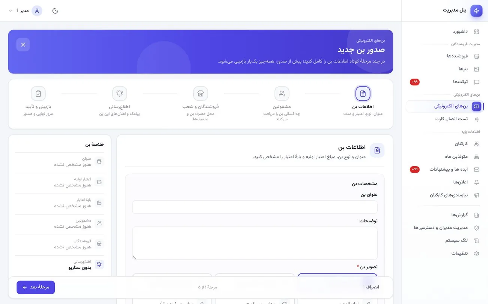
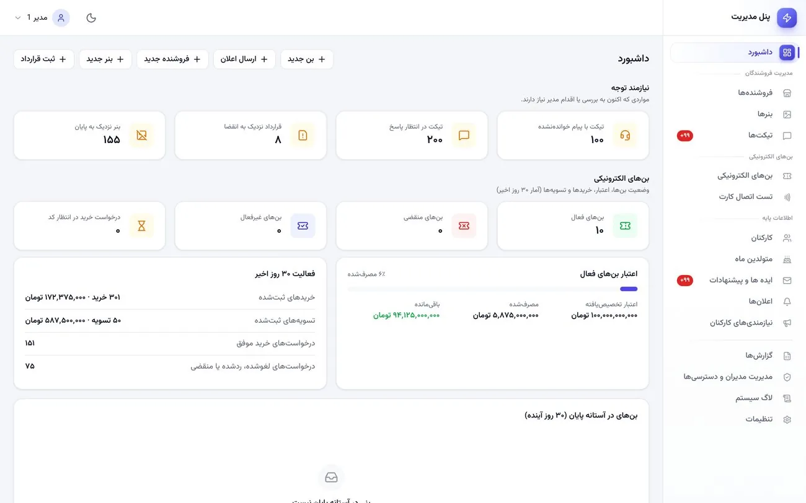
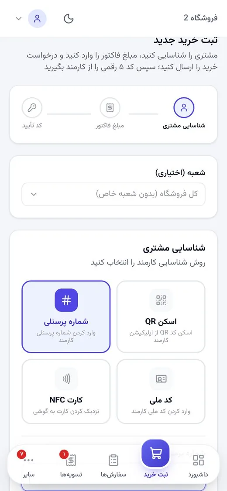
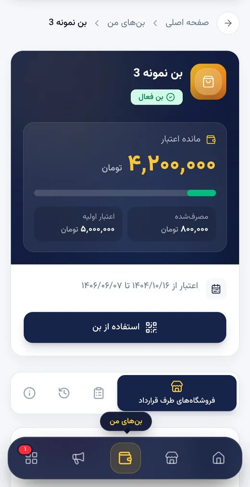

پنل مدیریت
برای مدیران سازمان، منابع انسانی و واحد مالی.
- داشبورد بنها، اعتبار، خرید و تسویه
- کارکنان، فروشندگان، شعب و قراردادها
- صدور، تمدید و غیرفعالسازی بن
- تسویه، مرکز گزارشها و لاگ سیستم
سازمان برای هر کارمند مشمول اعتبار رفاهی صادر میکند، کارکنان آن را در فروشگاهها و شعب طرف قرارداد خرج میکنند و سازمان مبلغ مصرفشده را شفاف با فروشندگان تسویه میکند.

چرا دیجیتال؟
کوپن کاغذی، امضای حضوری و جمعزنی دستی فاکتورها، هم وقت واحد مالی را میگیرد و هم پاسخگویی را سخت میکند.
| نیاز | روند دستی | سامانهٔ بن رفاهیات |
|---|---|---|
| مانده اعتبار هر نفر | ثبت دستی یا کوپن کاغذی | با هر تراکنش خودکار بهروز میشود |
| اطمینان از مجاز بودن خرید | تشخیص فروشنده یا نمایش کوپن | فقط بنهای فعال و مجاز همان فروشگاه نمایش داده میشود |
| تأیید خرید توسط کارمند | امضا یا شناسایی حضوری | کد ۵ رقمی که فقط کارمند میبیند، با امکان لغو |
| تخفیف هر فروشنده | توافق شفاهی یا یادداشت پراکنده | ثبت در بن برای هر فروشگاه و شعبه، محاسبه سمت سرور |
| پرداخت به فروشنده | جمعزنی دستی فاکتورها | طلب از تراکنشها محاسبه و پرداخت با رسید ثبت میشود |
| حسابرسی | پروندههای کاغذی | لاگ کامل با کاربر، زمان، IP و دستگاه |
جریان کار
هر خرید بهصورت یک تراکنش کامل ثبت میشود: کارمند، بن، فروشگاه، شعبه، مبلغ و زمان.
کارکنان (تکی یا گروهی از Excel)، فروشگاهها، شعب و قراردادها در پنل مدیریت ثبت میشوند.
مشمولین، اعتبار هر نفر، فروشگاهها و شعب مجاز و درصد تخفیفها تعیین میشود.
کارمند بن و مانده را در پنل خود میبیند و فروشگاههای طرف قرارداد را روی نقشه پیدا میکند.
فروشنده کارمند را شناسایی و مبلغ فاکتور را وارد میکند؛ تخفیف و سهم بن و نقد خودکار حساب میشود.
کارمند کد را فقط در صورت موافقت به فروشنده میگوید؛ تراکنش ثبت و مانده کم میشود.
مدیر پرداخت به فروشنده را با رسید ثبت میکند و گزارشهای Excel برای جمعبندی آمادهاند.
سه پنل، یک سامانه
هر سه پنل فقط از طریق API امن با سامانه کار میکنند و ارقام در همهٔ آنها یکسان است.

برای مدیران سازمان، منابع انسانی و واحد مالی.

موبایلمحور، برای فروشگاههای طرف قرارداد.

موبایلمحور با حالت روشن و تیره؛ ورود با کد ملی و شمارهٔ همراه.
امکانات کلیدی
مشخصات، مشمولین، فروشندگان و شعب، تخفیفها و اطلاعرسانی؛ در پنج مرحله با بازبینی نهایی.
مبلغ یکسان، ورود مبلغ هر نفر از Excel، یا محاسبه بر اساس وضعیت تأهل و تعداد فرزندان.
QR دو دقیقهای از گوشی کارمند، کد ملی یا شمارهٔ پرسنلی.
هر خرید فقط با کدی ثبت میشود که خود کارمند میبیند؛ با مهلت، تمدید و امکان لغو.
تخفیف هر فروشنده یا شعبه، سهم بن و سهم نقدی و ماندهٔ جدید، همه سمت سرور.
طلب، پرداختشده و ماندهٔ هر فروشنده؛ پرداخت جزئی یا کامل با شمارهٔ پیگیری و رسید.
فیلتر، انتخاب و ترتیب ستونها و خروجی Excel، حتی برای دادههای حجیم.
ثبت فعالیتها با کاربر، زمان، IP و دستگاه؛ دسترسی مدیران در ۱۹ ماژول.
اعلان هدفمند داخل پنل و سناریوهای پیامک برای صدور بن، تراکنش و تسویه.
فواید
تعریف سریع مشمولین و مبلغ هر نفر، اعلانهای هدفمند، متولدین ماه و صندوق ایدهها.
پیگیری تسویه با فروشندگان، رسید و شمارهٔ پیگیری، و ارقامی که همه از یک دفتر تراکنش میآیند.
دانستن مانده و محل مصرف، دیدن تخفیف هر فروشگاه و کنترل کامل روی هر خرید.
ثبت سریع و روشن خرید، و دیدن طلب، پرداختها و رسیدها در کیف پول.
سؤالات متداول
با کد ملی و شمارهٔ همراه. حساب کارکنان را مدیر تعریف میکند یا از فایل Excel بهصورت گروهی وارد میکند.
هر فروشگاه یک حساب فروشنده دارد و هنگام ثبت خرید، شعبه را انتخاب میکند. در هر بن میتوان برای هر شعبه تخفیف اختصاصی تعیین کرد.
سامانه سهم بن و سهم نقدی را جدا محاسبه میکند؛ مانده بن مصرف میشود و باقی مبلغ بهصورت نقدی پرداخت میشود.
سامانه وضعیت بنها را روزانه بهروز میکند و پیش از انقضا یادآوری میفرستد. مدیر میتواند بن را تمدید یا غیرفعال کند و گزارشها برای جمعبندی در دسترساند.
در جلسهٔ دمو، سامانه را با سناریوی سازمان شما مرور میکنیم.